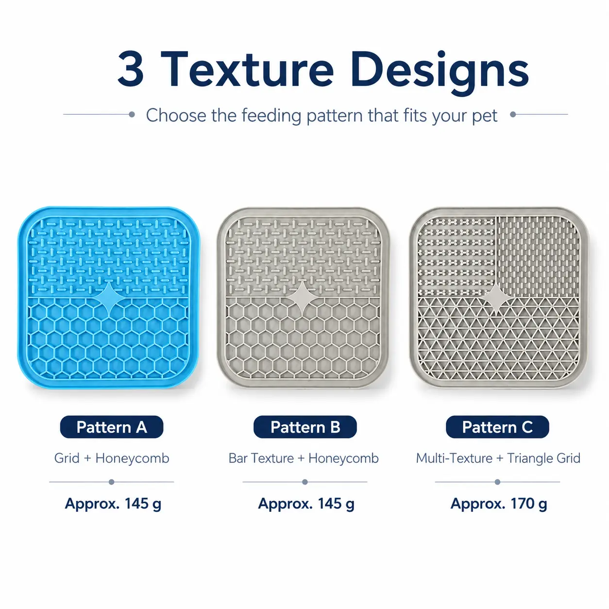
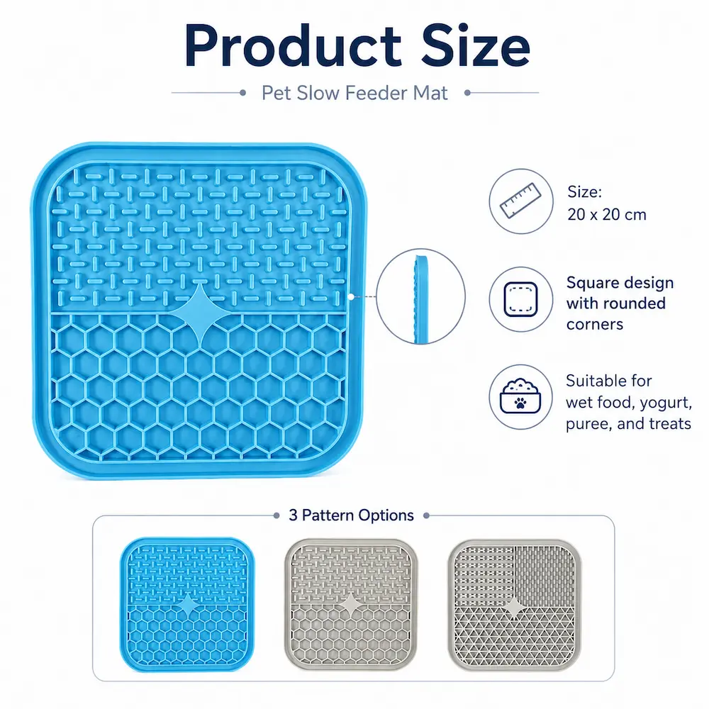
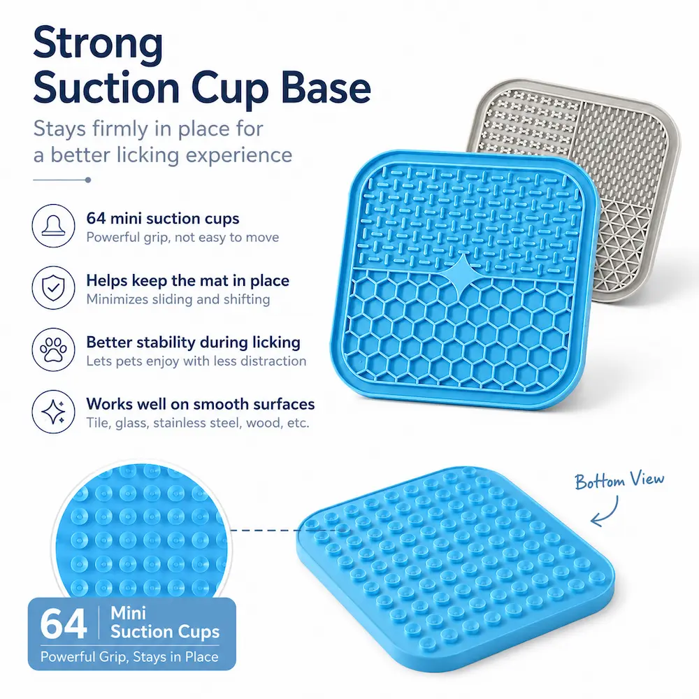
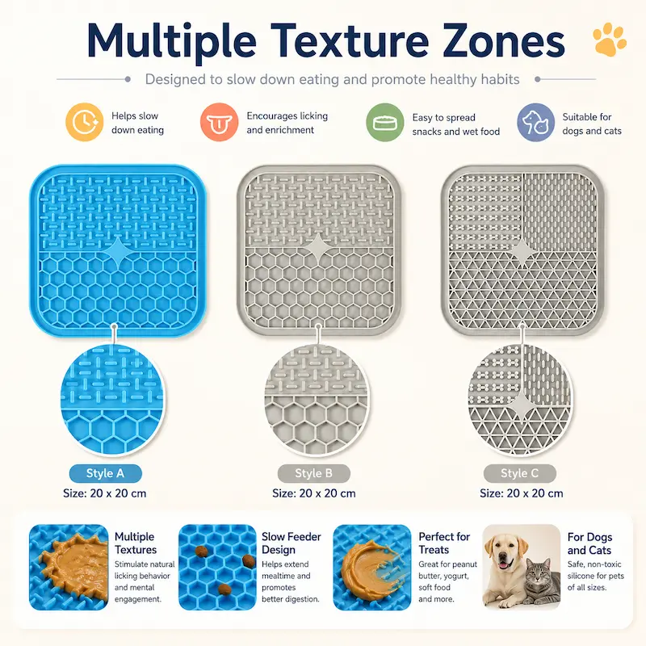
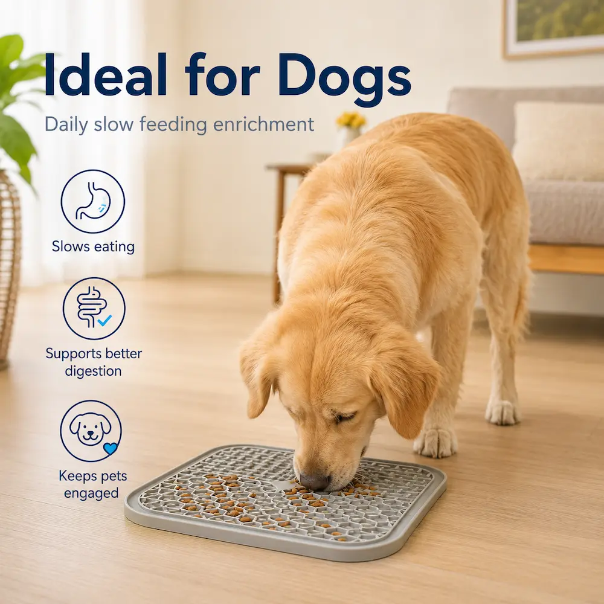
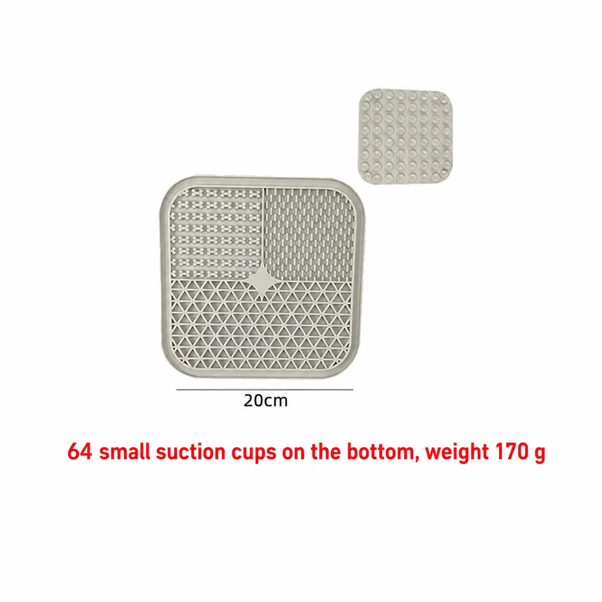
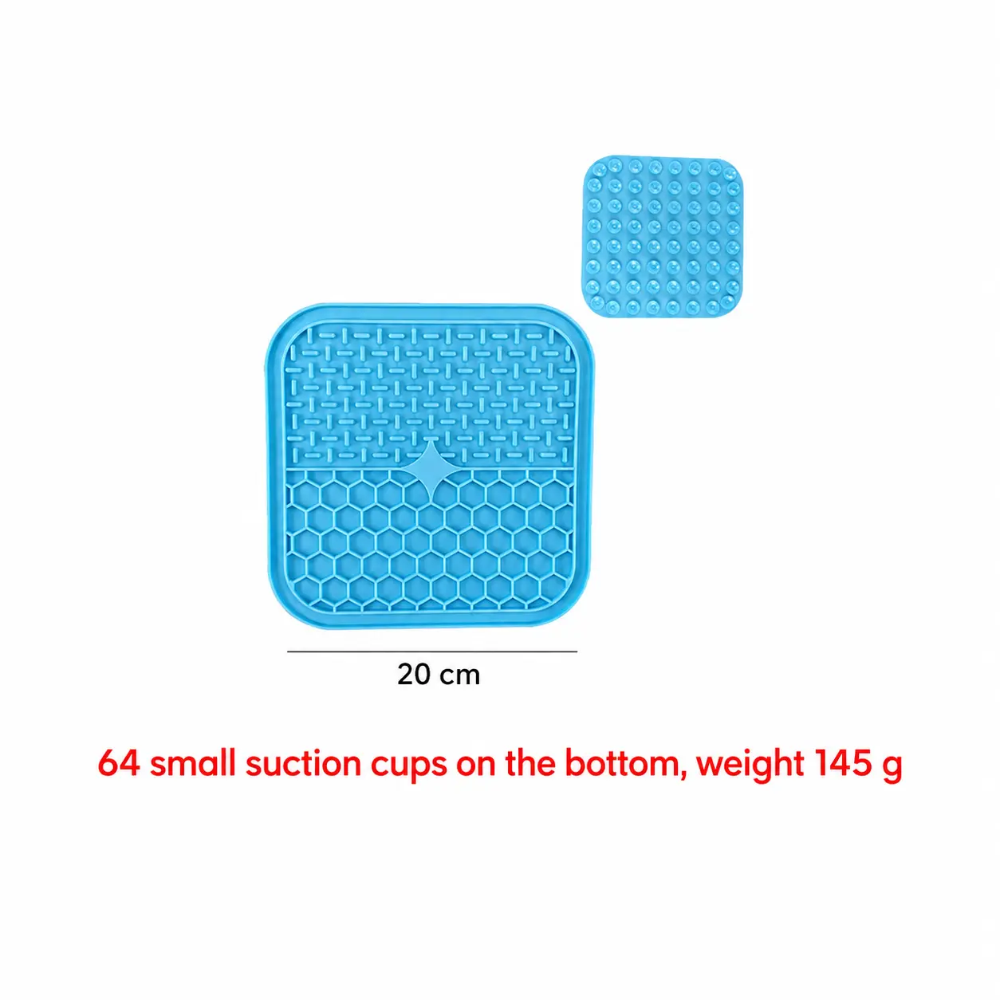

Silicone Lick Mat with Scraper and Suction Cups
S 15 cm · L 21 cm · scraper included · Blue / Orange · SKU LM-006
View Product





Available in 2 colors: Grey, Blue. Custom colors available for OEM orders.
| Material | Food-grade silicone (LFGB / FDA tested) |
|---|---|
| Mat Size | 20 × 20 cm, approx. 150–170 g |
| Colors | Grey, Blue |
| MOQ | From 10 pcs (stock colours) · custom colour or logo quoted on request |
| Sample Lead Time | Approx. 7 days |
| Production Lead Time | 15–25 days after sample approval |
| Customization | Logo, color, packaging available |
| Material reports | LFGB / FDA / REACH — silicone parts; reports on request |
| Suction Base | 64 small suction cups on the bottom |
| Packaging | Individual OPP bag |
| Carton | 120 pcs / 45 × 45 × 23 cm, 20.8 kg |
| Scraper | Optional silicone scraper, Grey / Blue / Pink / Yellow |
| Pet Size | Small / medium / large dogs and cats |
| SKU | LM-005 |
The 20 × 20 cm mat is divided into texture zones — a field of short ridges, a honeycomb block and a bone-pattern area. Each zone holds a different thickness of food, so spreadable treats take longer to work out and mealtime becomes a licking and problem-solving session rather than a few fast bites.
The back of the mat carries 64 small suction cups. On smooth floors, tiles, glass, fridges or bathtub walls they stop the mat sliding or lifting when a determined dog licks at the edges.
A silicone scraper is available as an optional accessory. It spreads peanut butter, yogurt or wet food into the grooves evenly, then scrapes the mat clean before washing — useful for both pet owners and for retail bundles.
One size: 20 × 20 cm, approx. 150–170 g depending on production run. The mat is flexible, so it can be rolled or laid flat, and it is thin enough to store in a drawer or travel bag.
Made from food-grade silicone tested to LFGB and FDA standards. The material is BPA-free, PVC-free and odorless, does not chip or crack, and is safe for direct food contact including frozen treats.
Rinse under a tap or place on the top rack of a dishwasher. The flexible silicone releases dried food from the grooves without scrubbing tools, and the mat dries quickly after washing.
Stock colors are Grey and Blue. Custom Pantone colors, logos, OPP bags and printed color boxes are available for OEM orders. Sample lead time is about 7 days; production runs 15–25 days after sample approval.
120 pieces pack into one 45 × 45 × 23 cm carton (20.8 kg). The flat format keeps freight and FBA prep costs low, and the scraper can be bundled as a higher-value set for retail.

Grey

Blue
The mat is 20 × 20 cm and weighs approximately 150–170 g depending on the production run. It is one size, available in Grey or Blue.
64 small suction cups on the bottom, which grip smooth floors, tiles, glass and bath surfaces.
The silicone scraper is an optional accessory and can be ordered with the mat. It is available in Grey, Blue, Pink and Yellow, and is useful as a retail bundle.
Yes. The mat can be placed on the top rack of a dishwasher, and it can also be frozen with wet food or broth.
From 10 pcs for stock colours. Custom colours, logo and packaging are quoted per order — send your target quantity and market and we reply within 12 hours.
S 15 cm · L 21 cm · scraper included · Blue / Orange · SKU LM-006
View Product
185 × 155 mm · 3 textures · suction base · 4 colours · SKU LM-007
View Product
22 × 19 cm · maze texture · 270 g · 3 colours · SKU LM-008
View ProductGet wholesale pricing, request a sample, or discuss OEM customization — we reply within 12 hours.
Marvin Bai — Sales Manager
📧 marvin@szqidian.net
📱 +86 159 1412 0274
Shenzhen Qidian Electronic Technology Co., Ltd.